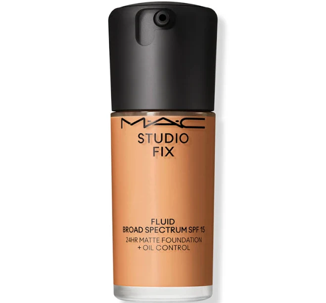
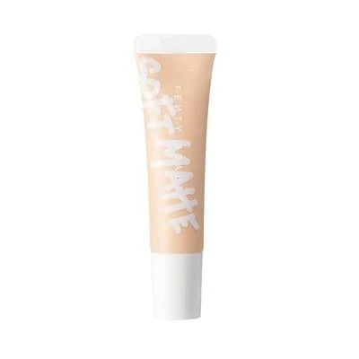
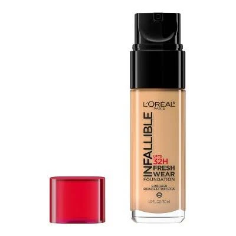
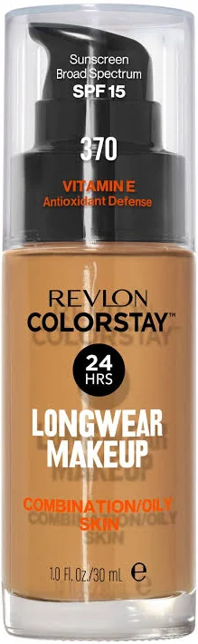
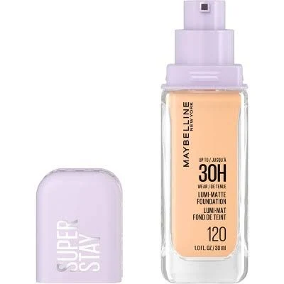
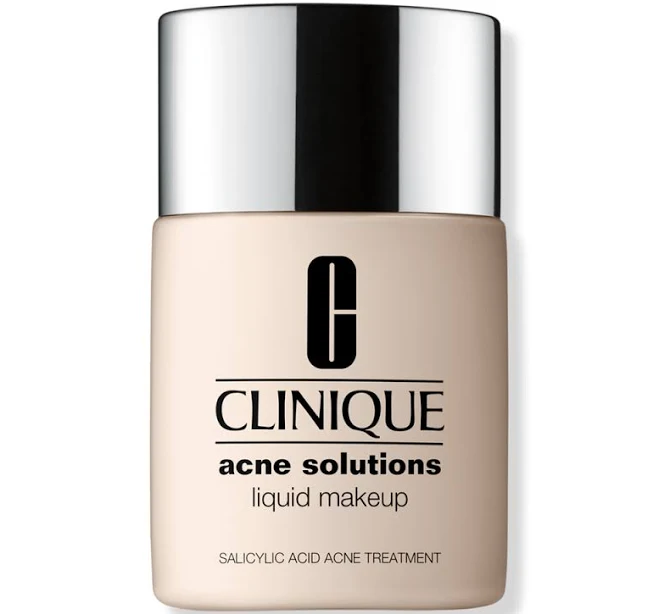
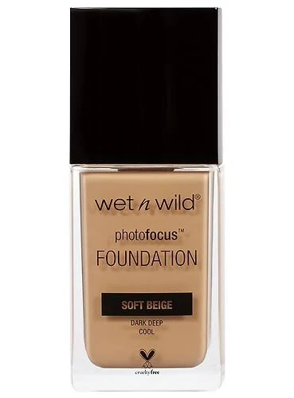
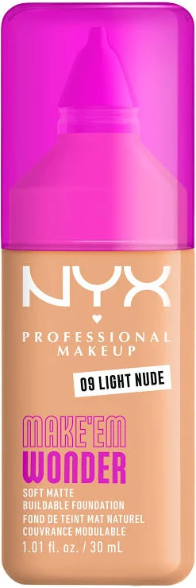

You said:
ChatGPT said:
I’ll narrow this to foundations that fit oily/acne-prone skin, NC42-ish warm olive undertones, long wear, photo-friendly finish, and the ~$40 budget rather than giving a generic beauty list.
I found one clear “best fit” rather than a tie: MAC Studio Fix Fluid is right at your budget and directly matches your NC42 reference, while also checking oil-control, non-clogging, and long-wear claims from the brand.








Get the MAC Studio Fix Fluid SPF 15 24HR Matte Foundation + Oil Control in NC42 first. It is $39, which fits your budget, and it is probably the closest match to your actual requirements: medium-to-full buildable coverage, soft-matte finish, oil control, 24-hour wear, transfer/sweat/humidity resistance, and MAC specifically says it does not clog pores or cause acne. MAC Cosmetics+1
For your shade, start with NC42 because you already know you are around that depth. Since you’re warm olive and worried about orange oxidation, swatch NC42 next to NC40, NC44, and C45 if you can. I’d avoid anything labeled “warm beige,” “caramel,” or “honey” unless it looks muted/yellow-olive in person, because those can pull peachy-orange by 2pm.
My backup pick would be L’Oréal Infallible Fresh Wear if you want to spend less. It has medium-to-full coverage, up to 32-hour wear, transfer resistance, and L’Oréal lists it as non-comedogenic and safe for sensitive skin. L'Oreal Paris Shade-wise, try around 475 Sun Beige / 480 Radiant Sand / 485 Golden Sun, depending on what looks least orange on your jaw.
For the wedding, I’d still choose MAC over the drugstore options because it is less risky for a 10-hour day and photos. Use a thin layer, let it set for a minute, then add coverage only where you need it. Set just the T-zone with a tinted or translucent-but-not-white powder, and avoid heavy white HD/silica powder because that is what can cause flashback in photos. Wet n Wild Photo Focus is specifically tested under multiple lighting conditions and designed to reduce white cast, but it is not as reliable overall as MAC for acne-prone oily skin. wet n wild Beauty
Buy: MAC Studio Fix Fluid in NC42.
Test before the wedding:
wear it for a full day once, photograph it with flash, and check your
jaw/cheeks in daylight after 20 minutes to make sure it has not turned
orange.